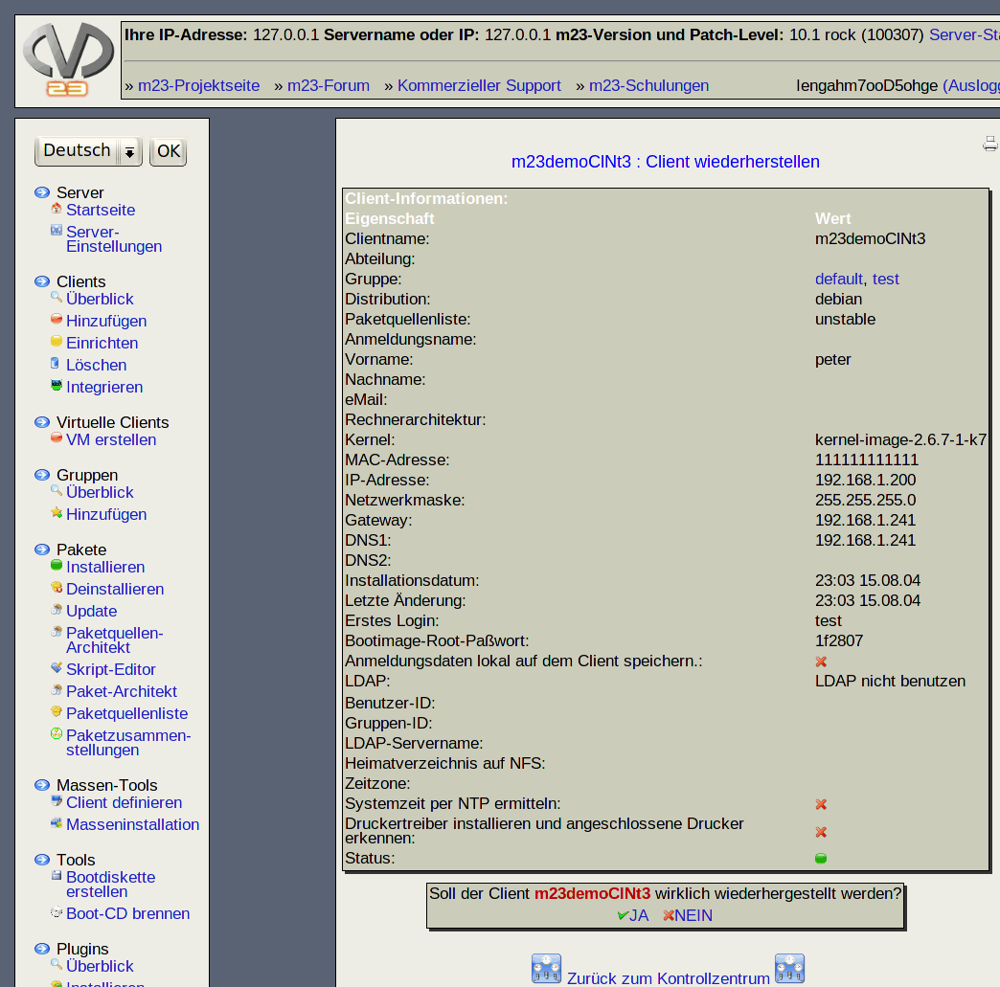

Wenn Sie einen Client wiederherstellen, wird er wieder so eingerichtet, wie er installiert wurde. Dies schließt Neupartitionierung und Formatierung mit ein. Es werden alle Softwarepakete neu installiert, die von m23 installiert wurden. Sollten Veränderungen am Client per Hand durchgeführt worden sein, können diese nicht wiederhergestellt werden.

Unterabschnitte
root
2015-09-06